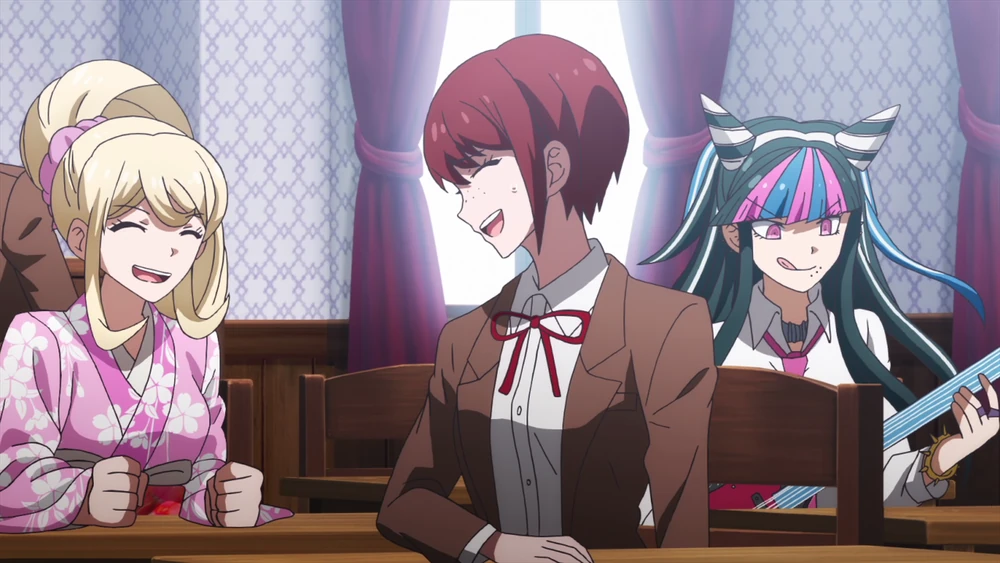
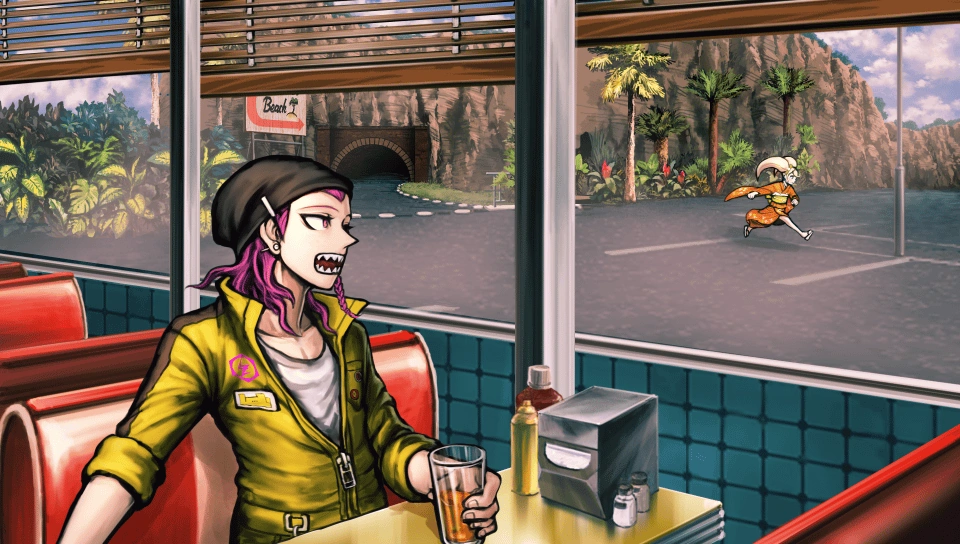
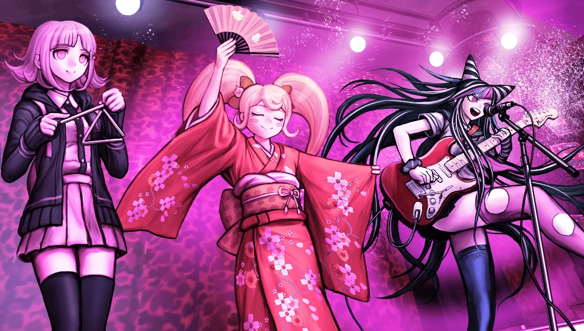
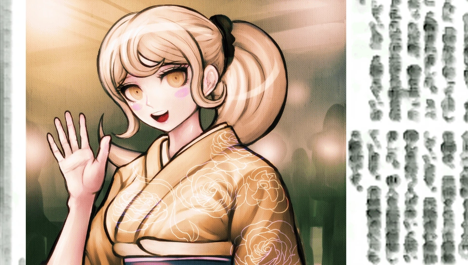

Hiyoko Saionji is a character in Danganronpa 2: Goodbye Despair. Releasing on July 26, 2012, created by Spike Chunsoft, a Japanese video game development company, Goodbye Despair was the second installment in the Danganronpa franchise. The plot follows 16 highschool students, on their first day at Hope's Peak Academy, a school which only invites the most talented students at their individual skills. Upon entering, they find themselves on a deserted island, and forced into a killing game. Danganronpa is a detective-style point-and-click visual novel, in which the player must collect evidence to successfully catch the killer in each chapter. This evidence is used during a class trial, in which the killer is found and executed, and this cycle repeats until the game ends.
Hiyoko was born to carry on Saionji Clan's legacy, being raised to eventually take over her family's traditional Japanese dance school, as the Ultimate Traditional Dancer. Her family's infamy led to having a stressful youth, being relentlessly bullied, threatened, and even having attempts made on her life. She grew to hate most of her family, most of which did not treat her well either, the exception being her father. Not related by blood, having married into the family, her dad was ranked very low in the Saionji Clan, not being able to do anything for her, eventually even having Hiyoko completely taken away from him. Her foul personality can likely be caused by this rough childhood. Part tying back to being raised as someone important, seeing others as "below her", part simply due to trauma. This is mostly revealed in her free time events, which you can read between chapters.
During the prologue and first chapter, Hiyoko plays very little role within the story, only speaking to jab at some of the other students. She starts to get properly involved in the second chapter, titled "Sea and Punishment, Sin and Coconuts". She quickly becomes attached to Mahiru Koizumi, the Ultimate Photographer, becoming the only person on the island to not meet any verbal abuse from her.
Seeing as nothing good can last, Mahiru is the victim of the second murder. Before finding the body, Hiyoko is seen running away from the beach house (the crime scene), leading to suspicion being thrown on her. During the trial, she is proven innocent, having been set up by the true killer. She had been knocked unconscious, waking up in the beach house and being the first witness to her friends body, running away in a panic.
The third chapter has the previous killer's accomplice, Fuyuhiko Kuzuryu, rejoin the group, at her very apparent dismay. Over the course of the chapter, it becomes clear Fuyuhiko is making an effort to change himself for the better, for himself and for the two who died in the last chapter. Hiyoko forgives him, and does the same, attempting to become kinder to the rest of the class. During this period of time, she bonds with Ibuki Mioda, the Ultimate Musician. While still facing some of her bullying, it is apparent Hiyoko enjoys her company.
As per usual, nothing good can last, and both Hiyoko and Ibuki are killed at the halfway point of the chapter. A link to a video of the body discovery can be found here. (Content warning: dead bodies). Unfortunately, Hiyoko's death is near irrelevant to the case, only causing confusion in how the crime took place. Her death was soley due to unfortunate timing, as she happened to show up at the scene during Ibuki's death, so she was killed so she would stay quiet. The perpretrator was Mikan Tsumiki, the Ultimate Nurse, who confirms this herself.
Past this point, Hiyoko is only mentioned one time in the rest of the game, in chapter 6. A picture of her is found in the ruins, the final area investigated in the game, depicting her seemingly years older. This is used as evidence in the final trial, playing a part in proving some complicated stuff pertaining to memory loss, brainwashing and being in a simulation. Too much detail to go into for this page, maybe another day.
Image Gallery, all images can be found here. Full credit to the Danganronpa fan wiki.